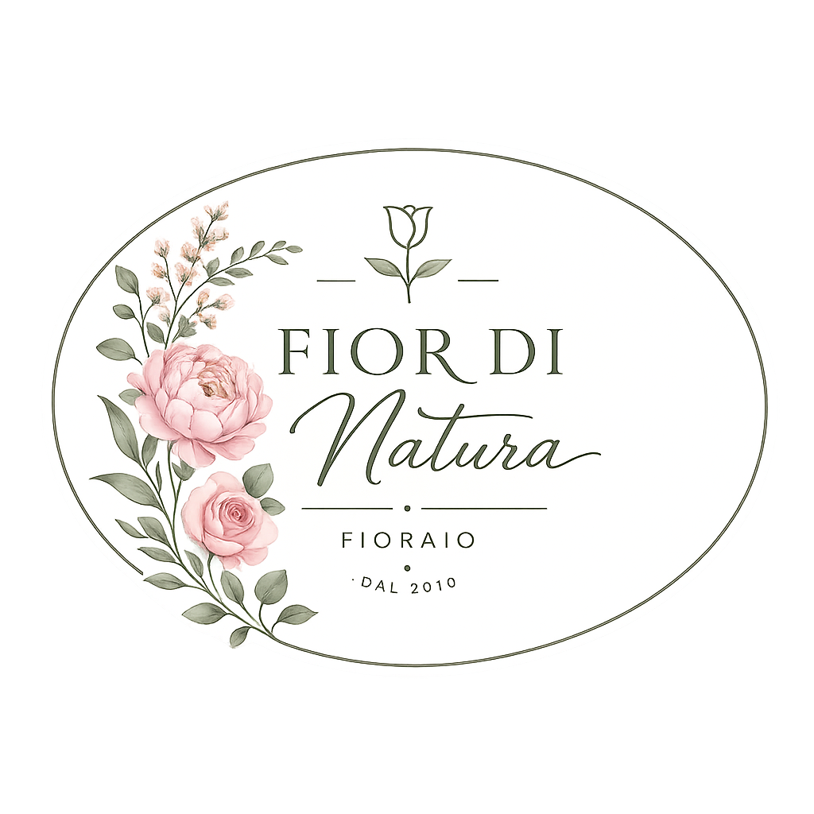

Bouquet su misura
Composizioni personalizzate per compleanni, anniversari, lauree e pensieri speciali.

Fior di NaturaFioraio con oltre 6000 anni di esperienza
Bouquet freschi, composizioni su misura e allestimenti floreali dallo stile romantico, leggero e ispirato ai colori della natura.
Chi siamo
Fior di Natura nasce dalla passione per l'arte floreale e per le piccole attenzioni quotidiane. Ogni creazione parte dall'ascolto: occasione, colori preferiti, stile dell'ambiente e messaggio da comunicare.
Realizziamo bouquet personalizzati, centrotavola, allestimenti per cerimonie e soluzioni floreali per attività commerciali, sempre con fiori freschi e una lavorazione artigianale.

Cosa facciamo
Soluzioni raffinate per privati, aziende, cerimonie e regali last minute.
Composizioni personalizzate per compleanni, anniversari, lauree e pensieri speciali.

Progetti floreali coordinati per cerimonie, ricevimenti, eventi privati e vetrine.

Decorazioni stagionali per uffici, showroom, ristoranti e spazi di accoglienza.
Consegna locale
Ordina il tuo bouquet entro le 11:00: prepariamo la composizione in giornata e la consegniamo nei quartieri di Città Laggiù con biglietto personalizzato.
Ispirazioni


Contattaci
Compila il form per richiedere un preventivo, prenotare una composizione o ricevere informazioni su consegne e allestimenti.